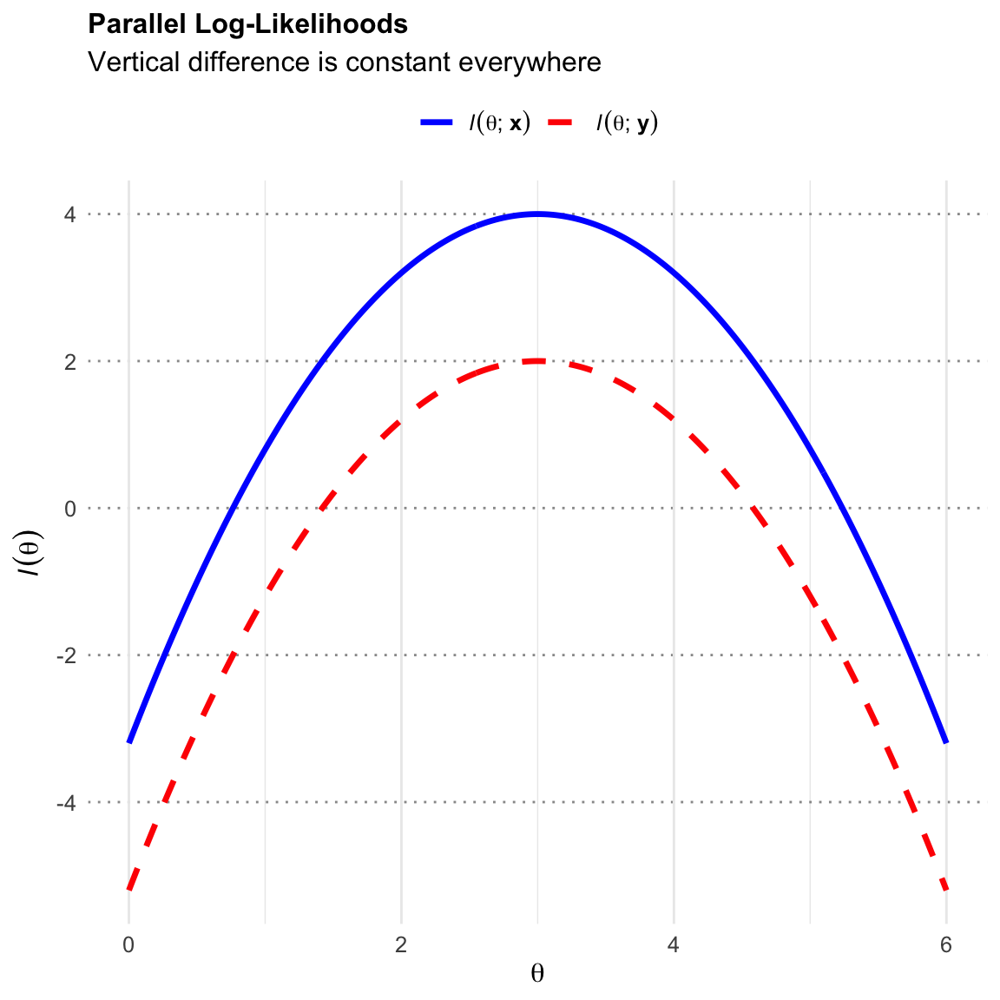

2 Sufficient Statistic
2.1 Sufficient Statistics
Definition 2.1 (Sufficient Statistic) A statistic \(T=T(\mathbf{X})\) is sufficient for \(\theta\) if one of the following three equivalent conditions holds:
Parallel Log-Likelihood
For any pair of data sets \(\mathbf{x}\) and \(\mathbf{y}\) such that \(T(\mathbf{x})=T(\mathbf{y})\), the difference in their log-likelihoods (\(\ell(\theta;\mathbf{x})=\ln(f(\mathbf{x};\theta)))\) is constant with respect to \(\theta\): \[ \ell(\theta; \mathbf{x}) - \ell(\theta; \mathbf{y}) = c(\mathbf{x}, \mathbf{y}) \quad \text{for all } \theta \] where \(c(\mathbf{x},\mathbf{y})\) depends only on \(\mathbf{x}\) and \(\mathbf{y}\), not on \(\theta\).
Factorization of Likelihood
The likelihood function of \(\theta\) given \(\mathbf{x}\) can be expressed as: \[ L(\theta; \mathbf{x}) = h(\mathbf{x})g(T(\mathbf{x});\theta) \] where \(h(\mathbf{x})\) is irrelevant to \(\theta\).
Non-informative Conditional Distribution of \(\mathbf{X}|T(\mathbf{X})\)
The conditional distribution of \(\mathbf{X}\) given \(T(\mathbf{X})=t\), denoted as \(f(\mathbf{x}|t, \theta)\), is independent of \(\theta\). \[ f(\mathbf{x}|T(\mathbf{x})=t, \theta) = f(\mathbf{x}|t) \]
Theorem 2.1 (Factorization Theorem) The three conditions in the definitions of Definition 2.1 are equivalent.
Click to view Complete Proof of Equivalence
Proof. Proof of Equivalence
We show the equivalence by proving the implications in a cycle or pairs: \((2 \Rightarrow 1)\), \((1 \Rightarrow 2)\), \((2 \Rightarrow 3)\), and \((3 \Rightarrow 2)\).
Factorization \(\Rightarrow\) Log-Likelihood Difference \((2 \Rightarrow 1)\)
Assume the Factorization Theorem holds: \(L(\theta; \mathbf{x}) = h(\mathbf{x}) g(T(\mathbf{x}); \theta)\). Consider any pair \(\mathbf{x}, \mathbf{y}\) such that \(T(\mathbf{x}) = T(\mathbf{y})\). \[ \ell(\theta; \mathbf{x}) - \ell(\theta; \mathbf{y}) = [\ln h(\mathbf{x}) + \ln g(T(\mathbf{x}); \theta)] - [\ln h(\mathbf{y}) + \ln g(T(\mathbf{y}); \theta)] \] Since \(T(\mathbf{x})=T(\mathbf{y})\), the terms \(\ln g(T(\mathbf{x}); \theta)\) and \(\ln g(T(\mathbf{y}); \theta)\) are identical and cancel out. \[ \ell(\theta; \mathbf{x}) - \ell(\theta; \mathbf{y}) = \ln h(\mathbf{x}) - \ln h(\mathbf{y}) \] This difference depends only on \(\mathbf{x}\) and \(\mathbf{y}\) (via \(h\)), and is independent of \(\theta\). Thus, condition 1 holds.
Log-Likelihood Difference \(\Rightarrow\) Factorization \((1 \Rightarrow 2)\)
Assume Condition 1 holds. For any \(\mathbf{x}\) and \(\mathbf{y}\) with \(T(\mathbf{x})=T(\mathbf{y})\), \(\ell(\theta; \mathbf{x}) - \ell(\theta; \mathbf{y}) = c(\mathbf{x}, \mathbf{y})\). Exponentiating, we get \(L(\theta; \mathbf{x}) = k(\mathbf{x}, \mathbf{y}) L(\theta; \mathbf{y})\), where \(k\) is independent of \(\theta\).
For each value \(t\) in the range of \(T\), select a fixed representative data point \(\mathbf{x}_t\) such that \(T(\mathbf{x}_t) = t\). For any data point \(\mathbf{x}\), let \(t = T(\mathbf{x})\). Using the relation above: \[ L(\theta; \mathbf{x}) = k(\mathbf{x}, \mathbf{x}_t) L(\theta; \mathbf{x}_t) \] Define \(h(\mathbf{x}) = k(\mathbf{x}, \mathbf{x}_{T(\mathbf{x})})\) and \(g(t; \theta) = L(\theta; \mathbf{x}_t)\). Then: \[ L(\theta; \mathbf{x}) = h(\mathbf{x}) g(T(\mathbf{x}); \theta) \] This is exactly the Factorization form.
Factorization \(\Rightarrow\) Conditional Distribution \((2 \Rightarrow 3)\)
Assume \(f(\mathbf{x}; \theta) = h(\mathbf{x})g(T(\mathbf{x}); \theta)\). We derive the conditional distribution \(P(\mathbf{X}=\mathbf{x} | T(\mathbf{X})=t)\). If \(T(\mathbf{x}) \neq t\), the probability is 0 (independent of \(\theta\)). If \(T(\mathbf{x}) = t\): \[ P(\mathbf{X}=\mathbf{x} | T(\mathbf{X})=t) = \frac{P(\mathbf{X}=\mathbf{x}, T(\mathbf{X})=t)}{P(T(\mathbf{X})=t)} = \frac{f(\mathbf{x}; \theta)}{\sum_{\{\mathbf{y} : T(\mathbf{y})=t\}} f(\mathbf{y}; \theta)} \] Substitute the factorization: \[ = \frac{h(\mathbf{x})g(t; \theta)}{\sum_{\{\mathbf{y} : T(\mathbf{y})=t\}} h(\mathbf{y})g(t; \theta)} = \frac{h(\mathbf{x})g(t; \theta)}{g(t; \theta) \sum_{\{\mathbf{y} : T(\mathbf{y})=t\}} h(\mathbf{y})} \] The term \(g(t; \theta)\) cancels out: \[ = \frac{h(\mathbf{x})}{\sum_{\{\mathbf{y} : T(\mathbf{y})=t\}} h(\mathbf{y})} \] This expression depends only on \(\mathbf{x}\) and \(h(\cdot)\), and is entirely free of \(\theta\). Thus, Condition 3 holds.
Conditional Distribution \(\Rightarrow\) Factorization \((3 \Rightarrow 2)\)
Assume \(f(\mathbf{x} | T(\mathbf{x}); \theta) = k(\mathbf{x})\), where \(k(\mathbf{x})\) is independent of \(\theta\). We can write the joint distribution as: \[ f(\mathbf{x}; \theta) = f(\mathbf{x} | T(\mathbf{x})=t; \theta) \cdot P(T(\mathbf{X})=t; \theta) \] Substitute the assumption: \[ f(\mathbf{x}; \theta) = k(\mathbf{x}) \cdot P(T(\mathbf{X})=T(\mathbf{x}); \theta) \] Let \(h(\mathbf{x}) = k(\mathbf{x})\) and \(g(t; \theta) = P(T(\mathbf{X})=t; \theta)\). Then: \[ f(\mathbf{x}; \theta) = h(\mathbf{x}) g(T(\mathbf{x}); \theta) \] This recovers the Factorization form.
Example 2.1 (Uniform Distribution \(U(\theta-1, \theta+1)\)) Consider a random sample \(\mathbf{X} = (X_1, \dots, X_n)\) from a Uniform distribution with range \((\theta-1, \theta+1)\).
The density for a single observation is: \[ f(x_i|\theta) = \frac{1}{(\theta+1) - (\theta-1)} I(\theta-1 < x_i < \theta+1) = \frac{1}{2} I(\theta-1 < x_i < \theta+1) \]
The joint PDF (likelihood) for the vector \(\mathbf{x}\) is: \[ L(\theta; \mathbf{x}) = \prod_{i=1}^n \frac{1}{2} I(\theta-1 < x_i < \theta+1) \]
\[ L(\theta; \mathbf{x}) = 2^{-n} \cdot I( \min(x_i) > \theta-1 ) \cdot I( \max(x_i) < \theta+1 ) \]
Using order statistics notation where \(X_{(1)} = \min(X_i)\) and \(X_{(n)} = \max(X_i)\): \[ L(\theta; \mathbf{x}) = 2^{-n} \cdot I( \theta < X_{(1)} + 1 ) \cdot I( \theta > X_{(n)} - 1 ) \]
\[ L(\theta; \mathbf{x}) = 2^{-n} \cdot I( X_{(n)} - 1 < \theta < X_{(1)} + 1 ) \]
By the Factorization Theorem, we can define:
- \(h(\mathbf{x}) = 2^{-n}\) (or simply 1, grouping constants into \(g\))
- \(g(T(\mathbf{x}), \theta) = I( X_{(n)} - 1 < \theta < X_{(1)} + 1 )\)
Thus, the sufficient statistic is the pair of order statistics: \[ T(\mathbf{X}) = (X_{(1)}, X_{(n)}) \]
Example 2.2 (Gamma Distribution) Let \(\mathbf{X} = (X_1, \dots, X_n)\) be i.i.d. \(\Gamma(\alpha, \beta)\). The pdf is:
\[ f(x_i|\alpha, \beta) = \frac{1}{\Gamma(\alpha)\beta^\alpha} x_i^{\alpha-1} e^{-x_i/\beta}, \quad x_i > 0 \]
The joint likelihood is:
\[ L(\alpha, \beta; \mathbf{x}) = \left( \frac{1}{\Gamma(\alpha)\beta^\alpha} \right)^n \left( \prod_{i=1}^n x_i \right)^{\alpha-1} \exp\left( -\frac{1}{\beta} \sum_{i=1}^n x_i \right) \]
By the Factorization Theorem, we can identify the parts that depend on the data and the parameters: \[ g(T(\mathbf{x}), \mathbf{\theta}) = \left( \prod_{i=1}^n x_i \right)^{\alpha} \exp\left( -\frac{1}{\beta} \sum_{i=1}^n x_i \right) \]
Thus, the sufficient statistics are: \[ T(\mathbf{X}) = \left( \prod_{i=1}^n X_i, \sum_{i=1}^n X_i \right) \]
Example 2.3 (Sufficient Statistic of Exponential Family) Many common distributions (Normal, Poisson, Gamma, Binomial) belong to the Exponential Family, which has a density in the form:
\[ f(\mathbf{x}|\theta) = h(\mathbf{x}) c(\theta) \exp\left( \sum_{j=1}^k \pi_j(\theta) t_j(\mathbf{x}) \right) \]
Then, by the Factorization Theorem, the statistic:
\[ T(\mathbf{X}) = \left( \sum_{i=1}^n t_1(x_i), \dots, \sum_{i=1}^n t_k(x_i) \right) \]
is a sufficient statistic for \(\theta\).
Example 2.4 (Bernoulli as Exponential Family) Let \(X_1, \dots, X_n \overset{i.i.d.}{\sim} \text{Bernoulli}(p)\). To find the sufficient statistic, we write the Joint PDF of the sample in the canonical Exponential Family form:
\[ f(\mathbf{x}|\theta) = h(\mathbf{x}) c(\theta) \exp\left( \sum_{j=1}^k \pi_j(\theta) T_j(\mathbf{x}) \right) \]
Write the Joint PDF
\[ f(\mathbf{x}|p) = \prod_{i=1}^n p^{x_i} (1-p)^{1-x_i} \]
Convert to Exponential Form
\[ \begin{aligned} f(\mathbf{x}|p) &= \exp\left( \sum_{i=1}^n \left[ x_i \ln p + (1-x_i) \ln(1-p) \right] \right) \\ &= \exp\left( \sum_{i=1}^n \left[ x_i \ln p + \ln(1-p) - x_i \ln(1-p) \right] \right) \\ &= \exp\left( \sum_{i=1}^n \ln(1-p) + \sum_{i=1}^n x_i \left[ \ln p - \ln(1-p) \right] \right) \end{aligned} \]
Factor into Components We separate the terms to match the definition:
\[ f(\mathbf{x}|p) = \underbrace{1}_{h(\mathbf{x})} \cdot \underbrace{(1-p)^n}_{c(p)} \cdot \exp\left( \underbrace{\ln\left(\frac{p}{1-p}\right)}_{\pi_1(p)} \underbrace{\sum_{i=1}^n x_i}_{T_1(\mathbf{x})} \right) \]
Conclusion: By inspection of the exponent, the statistic coupled with the parameter \(\pi_1(p)\) is the sufficient statistic:
\[ T(\mathbf{X}) = \sum_{i=1}^n X_i \]
Remark 2.1 (Sufficient Statistic is the sufficient “Parameter” of Likelihood). There is a dual relationship between the sufficient statistic and the parameter \(\theta\). Conventionally, we view \(f(x|\theta)\) as a function of \(x\) parameterized by \(\theta\).
However, in Bayesian inference or likelihood theory, we often view the likelihood \(L(\theta; x)\) as a function of \(\theta\) determined by the observed data \(x\). The Factorization Theorem implies:
\[ L(\theta; \mathbf{x}) \propto g(T(\mathbf{x})|\theta) \]
This suggests that \(T(\mathbf{x})\) completely determines the shape of the likelihood function. In this specific sense, the sufficient statistic \(T(\mathbf{x})\) acts as the “parameter” of the likelihood function itself.
For the exponential family that we will discuss below, this duality is explicit:
\[ \log L(\theta; \mathbf{x}) = \text{const} + \sum_{i=1}^k \eta_i(\theta) T_i(\mathbf{x}) - n A(\theta) \]
Here, \(T_i(\mathbf{x})\) serves as the coefficient (or parameter) for the function \(\eta_i(\theta)\).
2.2 Minimal Sufficient Statistics
Definition 2.2 (Minimal Sufficient Statistic (MSS)) A statistic \(T(X)\) is a Minimal Sufficient Statistic if:
- Sufficiency: \(T(X)\) is a sufficient statistic for \(\theta\).
- Minimality: For any other sufficient statistic \(S(X)\), \(T(X)\) is a function of \(S(X)\). \[ T(X) = g(S(X)) \] (This implies that \(T(X)\) provides the greatest possible data reduction without losing information about \(\theta\). If \(S(x) = S(y)\), then it must be that \(T(x) = T(y)\)).
Theorem 2.2 (MSS Condition Theorem) Let \(T(X)\) be a sufficient statistic. \(T(X)\) is a Minimal Sufficient Statistic (MSS) if and only if for any pair of data sets \(x\) and \(y\): \[ \ell(\theta; x) = \ell(\theta; y) + c(x, y) \text{ for all } \theta \implies T(x) = T(y) \] where \(c(x, y)\) is a constant independent of \(\theta\).
Click to view the Proof
Proof. Direction 1: Sufficiency (Implication holds \(\implies\) \(T\) is MSS)
Assume that for any \(x, y\), \([\ell(\theta; x) = \ell(\theta; y) + c(x, y)] \implies T(x) = T(y)\). We must show that \(T\) is a function of any sufficient statistic \(U\).
Let \(U(X)\) be any sufficient statistic. Assume \(U(x) = U(y)\).
By the Factorization Theorem, the likelihoods are: \[ L(\theta; x) = h(x)g(U(x), \theta) \] \[ L(\theta; y) = h(y)g(U(y), \theta) \]
Since \(U(x) = U(y)\), the factor \(g(U(x), \theta)\) is identical to \(g(U(y), \theta)\). Taking the log-ratio: \[ \ell(\theta; x) - \ell(\theta; y) = \ln h(x) - \ln h(y) \] The term \(\ln h(x) - \ln h(y)\) depends only on \(x\) and \(y\), not on \(\theta\). Let this be \(c(x,y)\). \[ \ell(\theta; x) = \ell(\theta; y) + c(x, y) \]
By our main assumption, this condition implies \(T(x) = T(y)\).
Thus, we have shown that \(U(x) = U(y) \implies T(x) = T(y)\). This means \(T\) is a function of \(U\). Since \(U\) is arbitrary, \(T\) is Minimal Sufficient.
Direction 2: Necessity (\(T\) is MSS \(\implies\) Implication holds)
Assume \(T\) is Minimal Sufficient. We must prove that if \(\ell(\theta; x) = \ell(\theta; y) + c(x, y)\) for all \(\theta\), then \(T(x) = T(y)\).
Define the Statistic \(S(x)\): Let \(S(x)\) be the set of all possible datasets \(z\) which give the same log-likelihood shape as \(x\): \[ S(x) = \{z \mid \ell(\theta; z) = \ell(\theta; x) + c_z \text{ for all } \theta \} \] This statistic \(S(x)\) represents the equivalence class of \(x\) under the parallel log-likelihood relationship. If the condition \(\ell(\theta; x) = \ell(\theta; y) + c(x, y)\) holds, then by definition \(x\) and \(y\) generate the same equivalence class, so \(S(x) = S(y)\).
Show \(S(x)\) is Sufficient (Directly via Likelihood Ratio): To prove \(S\) is sufficient, we check the Likelihood Ratio Condition (Condition 2 from Section 1.1). Suppose \(S(x) = S(y)\). By the definition of \(S\), this implies: \[ \ell(\theta; x) - \ell(\theta; y) = c(x, y) \] By the definition of sufficiency, \(S(X)\) is a sufficient statistic.
Use Minimality of \(T\): Since \(T\) is a Minimal Sufficient Statistic, it is a function of any sufficient statistic. Therefore, \(T\) must be a function of \(S\). That is, \(T(x) = f(S(x))\).
Conclusion: Assume \(\ell(\theta; x) = \ell(\theta; y) + c(x, y)\). Then \(S(x) = S(y)\). Consequently, \(T(x) = f(S(x)) = f(S(y)) = T(y)\).
Example 2.5 (Checking Minimality via Log-Likelihood Condition) Let \(X_1, X_2, X_3 \overset{i.i.d.}{\sim} \text{Bernoulli}(p)\). We determine the MSS by checking the implication from the MSS Condition Theorem: \[ \text{Parallel Log-Likelihoods} \implies T(x) = T(y) \]
Step 1: Establishing the MSS
First, we find the condition under which two log-likelihoods are parallel. \[ \ell(p; x) = (\sum x_i) \ln p + (n - \sum x_i) \ln(1-p) \] The difference \(\ell(p; x) - \ell(p; y)\) depends on \(p\) only through the term \((\sum x_i - \sum y_i) \ln \frac{p}{1-p}\). For this difference to be constant (independent of \(p\)), the coefficient must be zero: \[ \text{Parallel Log-Likelihoods} \iff \sum x_i = \sum y_i \] The statistic that corresponds exactly to this condition is \(T(X) = \sum X_i\). Since \(\sum x_i = \sum y_i\) trivially implies \(T(x) = T(y)\), \(T(X)\) is the Minimal Sufficient Statistic.
Step 2: Why \(S(X) = (X_1, \sum_{i=2}^3 X_i)\) is NOT Minimal
Now consider the “richer” statistic \(S(X)\). If \(S\) were minimal, the parallel condition must imply \(S(x) = S(y)\). We check: \[ \sum x_i = \sum y_i \stackrel{?}{\implies} (x_1, \sum_{i=2}^3 x_i) = (y_1, \sum_{i=2}^3 y_i) \] Counter-Example:
Let \(x = (1, 0, 1)\) and \(y = (0, 1, 1)\).
Check Parallel Condition:
\(\sum x_i = 2\) and \(\sum y_i = 2\). The sums are equal, so the log-likelihoods are parallel.
Check Statistic Equality:
\[S(x) = (1, 1)\] \[S(y) = (0, 2)\] \[S(x) \neq S(y)\]
Conclusion: The parallel condition holds, but \(S(x) \neq S(y)\). The implication fails. This proves that \(S(X)\) is not minimal—it retains “extra” information (the position of the first success) that is not relevant to the likelihood shape.